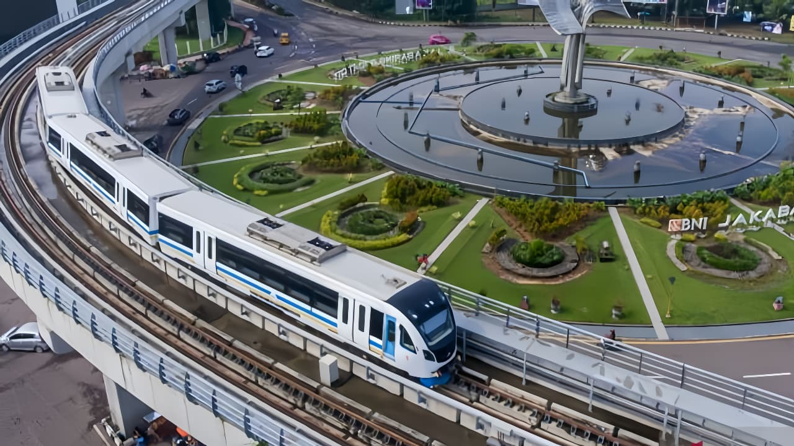
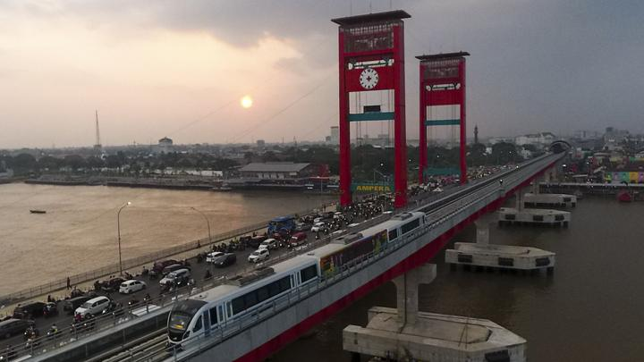
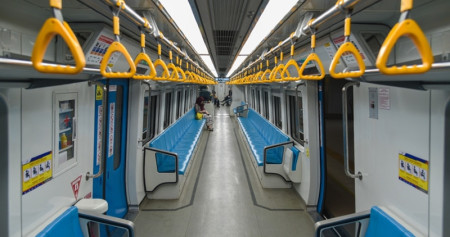
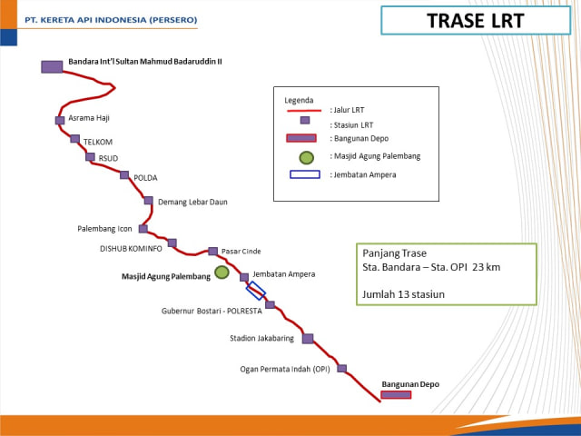

Light Rail Transit (LRT) Palembang adalah sistem transportasi modern pertama di Indonesia yang dibangun untuk menunjang mobilitas masyarakat secara cepat, nyaman, dan efisien.

Pembangunan dimulai tahun 2015 untuk Asian Games 2018. LRT resmi beroperasi pada 2018 dan menjadi yang pertama di Indonesia.

